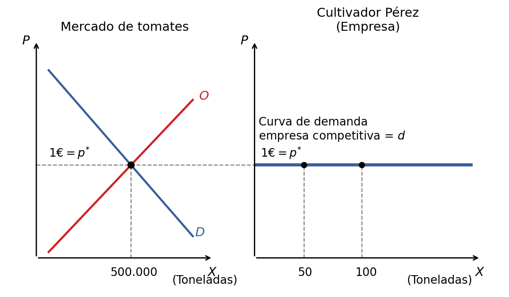
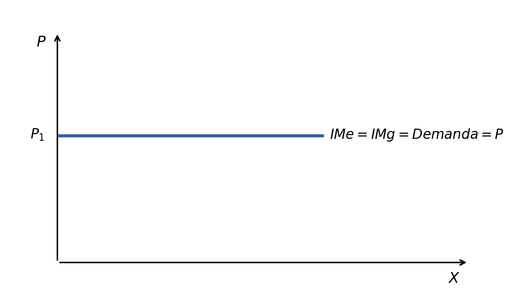
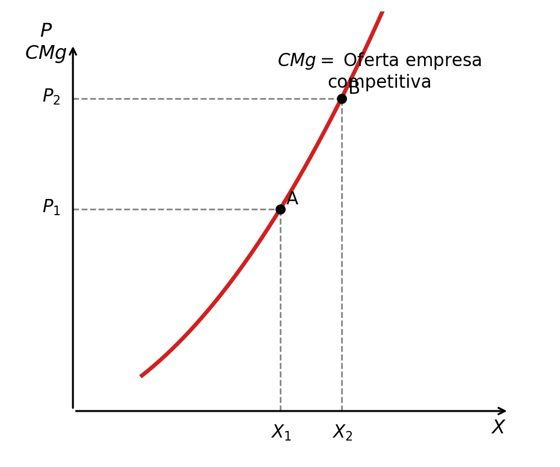
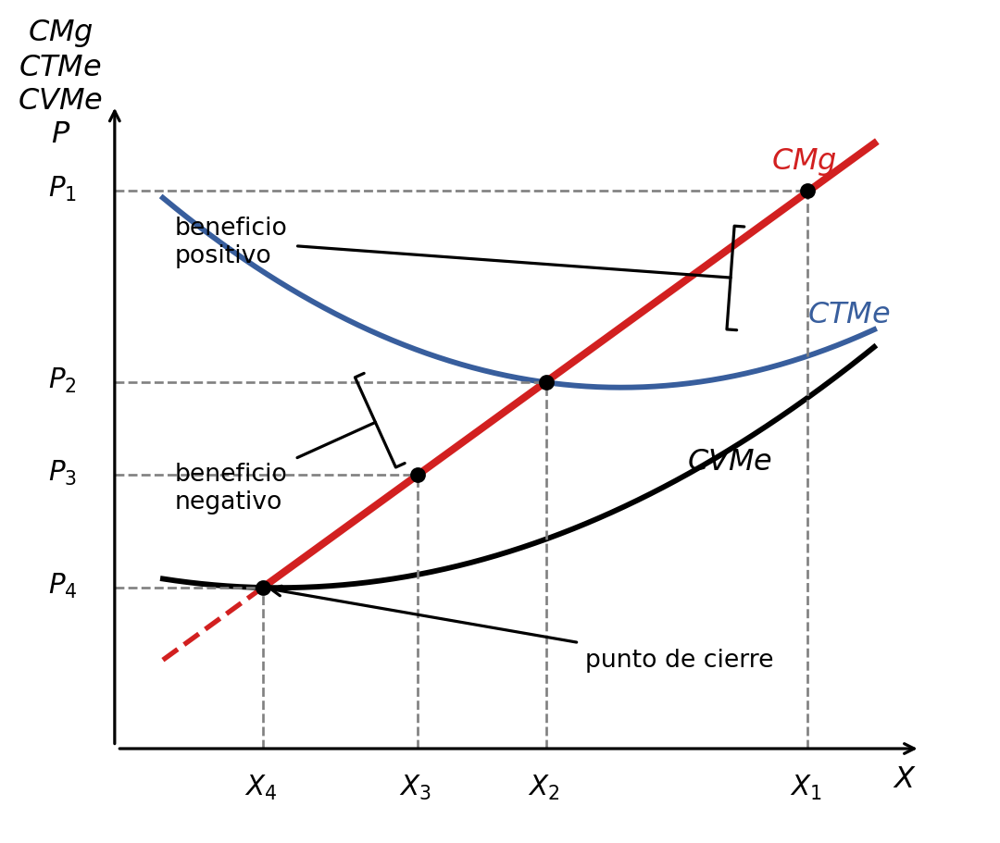

4 La empresa en el mercado de competencia perfecta
4.1 La competencia perfecta: características
Cuando se analiza el funcionamiento de distintos mercados en función del grado de competencia, el análisis se centra en cuatro cuestiones fundamentales:
- ¿Cuántas empresas participan en el mercado?
- ¿El producto obtenido por todas las empresas es idéntico?
- ¿Qué grado de capacidad tiene cada empresa para fijas el precio del producto cuando actúa individualmente?
- ¿Existen barreras de entrada o salida del sector?
A continuación responderemos cada una de estas preguntas para el caso de un mercado con competencia perfecta. Para simplificar, en el mercado de competencia perfecta se darán siempre dos supuestos: existe información perfecta y las empresas son idénticas.
4.1.0.1 ¿Cuántas empresas participan en el mercado?
En competencia perfecta actúa un gran número de empresas y cada una aporta una porción pequeña de la producción total. En una situación como esta, se dice que el mercado está atomizado.
4.1.0.2 ¿El producto obtenido por todas las empresas es idéntico?
En competencia perfecta, el producto obtenido por todas las empresas es idéntico. Son bienes homogéneos.
4.1.0.3 ¿Qué grado de capacidad tiene cada empresa para fijar el precio del producto cuando actúa individualmente?
En competencia perfecta, la empresa no tiene ninguna capacidad para fijar el precio cuando actúa individualmente. Por tanto, el precio lo fija el mercado. Si una empresa intenta vender a un precio superior al de mercado, no venderá nada.
En el ejemplo que se muestra a continuación, las 100 toneladas que puede cultivar Pérez son insignificantes dentro de las 500.000 toneladas del mercado, por lo que no tiene capacidad para influir en el precio. En consecuencia, el mercado fija el precio, la empresa solo es capaz de vender a ese precio, y la curva de demanda a la que se enfrenta la empresa individual es horizontal.
4.1.0.4 ¿Existen barreras de entrada o salida del sector?
En competencia perfecta no existen barreras de entrada o salida. Esto se conoce como libre concurrencia.
En el corto plazo, las empresas no pueden entrar o salir instantáneamente. En el largo plazo, sí pueden entrar o salir.
4.2 Los ingresos de la empresa competitiva
Como vimos en el Capítulo 3, el beneficio de la empresa se define como la diferencia entre el ingreso total y el coste total:
\[ \text{Beneficio económico} = \text{Ingresos} - \text{Costes totales económicos} \]
Ingreso total (\(IT\)). Se obtiene multiplicando el precio de una unidad de producto por la cantidad de producto vendida. En competencia perfecta, la empresa no tiene poder para fijar el precio \(P\). Por tanto, \(P\) se considera una constante y no depende de la cantidad \(X\):
\[ IT = P \cdot X \]
Ingreso medio (\(IMe\)). Se obtiene dividiendo el ingreso total entre la cantidad de producto vendida:
\[ IMe = \frac{IT}{X}=\frac{P\cdot X}{X}=P \]
El ingreso medio coincide con el precio. Este contenido ya fue visto en el tema 3.
Ingreso marginal. Es la cantidad en la que se incrementa el ingreso total (\(IT\)) cuando la producción aumenta en una unidad:
\[ IMg = \frac{\Delta IT}{\Delta X} = \frac{\Delta(P\cdot X)}{\Delta X} = \frac{P\cdot \Delta X}{\Delta X} = P \]
En términos continuos:
\[ IMg = \frac{dIT}{dX} = \frac{d(P\cdot X)}{dX} = P \]
El ingreso medio (\(IMe\)) y el ingreso marginal (\(IMg\)) de la empresa en competencia perfecta coinciden con el precio y con la curva de demanda horizontal a la que se enfrenta la empresa competitiva, dado que el precio \(P\) no depende de la cantidad \(X\) producida por la empresa.

4.3 Cuánto producir para maximizar el beneficio
Vamos a ver el supuesto en el corto plazo, con un precio fijado por un mercado competitivo para el producto y un número fijo de empresas.
\[ B^{\circ}(X)=IT(X)-CT(X) \]
La empresa individual toma el precio como dado y solo puede elegir el nivel de producción. Por tanto, establecerá el nivel de producción que haga máximo su beneficio, es decir, buscará su nivel de producción óptimo.
La cuestión central es: ¿cómo encontrar el valor de \(X\) que maximiza \(B^{\circ}(X)\)?
La condición de primer orden para maximizar el beneficio exige que la primera derivada de \(B^{\circ}\) respecto de \(X\) sea cero:
\[ \frac{dB^{\circ}}{dX} =\frac{d(IT)}{dX}-\frac{d(CT)}{dX}=0 \]
Como \(\frac{d(IT)}{dX}=IMg\) y \(\frac{d(CT)}{dX}=CMg\):
\[ \frac{dB^{\circ}}{dX}=IMg-CMg=0 \quad \Rightarrow \quad IMg=CMg \]
En competencia perfecta, el ingreso marginal coincide con el precio. Por tanto:
\[ \frac{dB^{\circ}}{dX} =\frac{d(P\cdot X)}{dX}-CMg=0 \]
\[ \frac{dB^{\circ}}{dX}=P-CMg=0 \quad \Rightarrow \quad P=CMg \]
La empresa establecerá el nivel de producción en el punto en el que el precio es igual al coste marginal. Lo denominaremos punto óptimo o punto de equilibrio de la empresa.
Para garantizar que se trata de un máximo, y no de un mínimo, es necesario obtener la condición de segundo orden. Es decir, la segunda derivada del beneficio respecto a la cantidad producida debe ser negativa:
\[ \frac{d^2 B^{\circ}}{dX^2} =\frac{d(P-CMg)}{dX} =\frac{dP}{dX}-\frac{dCMg}{dX}<0 \quad \Rightarrow \quad \frac{dCMg}{dX}>0 \]
La tabla siguiente recoge el cálculo de las variables relevantes. La producción está medida en toneladas y las magnitudes monetarias están expresadas en miles de euros.
| \(PT\) | \(CT\) | \(CTMe\) | \(CMg\) | \(P\) | \(IT\) | \(IMg\) | \(B^{\circ}\) | \(\Delta B^{\circ}\) |
|---|---|---|---|---|---|---|---|---|
| 1 | 14 | 14 | — | 5 | 5 | — | -9 | — |
| 2 | 19 | 9.5 | 5 | 5 | 10 | 5 | -9 | 0 |
| 3 | 22 | 7.33 | 3 | 5 | 15 | 5 | -7 | +2 |
| 4 | 24 | 6 | 2 | 5 | 20 | 5 | -4 | +3 |
| 5 | 25 | 5 | 1 | 5 | 25 | 5 | 0 | +4 |
| 6 | 27 | 4.5 | 2 | 5 | 30 | 5 | 3 | +3 |
| 7 | 30 | 4.29 | 3 | 5 | 35 | 5 | 5 | +2 |
| 8 | 34 | 4.25 | 4 | 5 | 40 | 5 | 6 | +1 |
| 9 | 39 | 4.33 | 5 | 5 | 45 | 5 | 6 | 0 |
| 10 | 45 | 4.5 | 6 | 5 | 50 | 5 | 5 | -1 |
| 11 | 52 | 4.73 | 7 | 5 | 55 | 5 | 3 | -2 |
| 12 | 60 | 5 | 8 | 5 | 60 | 5 | 0 | -3 |
| 13 | 69 | 5.31 | 9 | 5 | 65 | 5 | -4 | -4 |
| 14 | 79 | 5.64 | 10 | 5 | 70 | 5 | -9 | -5 |
| 15 | 90 | 6 | 11 | 5 | 75 | 5 | -15 | -6 |
En la tabla se utilizan las siguientes relaciones:
\[ CTMe=\frac{CT}{PT} \]
\[ CMg=\frac{\Delta CT}{\Delta PT} \]
\[ IT=P\cdot PT \]
\[ IMg=\frac{\Delta IT}{\Delta PT} \]
\[ \Delta B^{\circ}=IMg-CMg \]
Se obtiene el beneficio máximo con el nivel de producción donde se igualan el precio y el coste marginal. Por tanto, la condición de máximo beneficio es:
\[ IMg=CMg \quad \text{o} \quad P=CMg \]
4.4 El beneficio de la empresa a corto plazo
Beneficio positivo o extraordinario. En el nivel de producción óptimo, el precio es mayor que el coste total medio:
\[ IT>CT \quad \Rightarrow \quad \frac{IT}{X}>\frac{CT}{X} \quad \Rightarrow \quad P>CTMe \]
Beneficio nulo o normal. En el nivel de producción óptimo, el precio es igual al coste total medio:
\[ IT=CT \quad \Rightarrow \quad \frac{IT}{X}=\frac{CT}{X} \quad \Rightarrow \quad P=CTMe \]
Beneficio negativo o pérdidas. En el nivel de producción óptimo, el precio es menor que el coste total medio:
\[ IT<CT \quad \Rightarrow \quad \frac{IT}{X}<\frac{CT}{X} \quad \Rightarrow \quad P<CTMe \]
4.5 La curva de oferta de la empresa a corto plazo
La curva de oferta de mercado muestra la cantidad máxima que los vendedores están dispuestos a vender a cada precio. La curva de coste marginal de la empresa competitiva recoge la misma información, pero para una empresa individual.
Aunque algunos tramos de esta curva pueden no formar parte de la curva de oferta de la empresa, la empresa fija el nivel de producción que iguala el precio al coste marginal. Si el precio de mercado es \(P_1\), la empresa decide producir \(X_1\) en el punto A. Si el precio de mercado es \(P_2\), la empresa decide producir \(X_2\) en el punto B.

La curva de coste marginal es la curva de oferta de la empresa en competencia perfecta, pero solo en el tramo en el que el coste marginal supera al coste medio.

4.6 La curva de oferta del mercado a corto plazo
La curva de oferta del mercado a corto plazo se obtiene como la suma de las ofertas individuales de las empresas que producen ese bien.
Supongamos una misma tecnología de producción y, por tanto, la misma curva de \(CMg\) y la misma curva de oferta. Si conocemos una de las curvas individuales, se puede conocer la curva de mercado multiplicando las cantidades ofrecidas por una empresa por el número de empresas.
Por ejemplo, existen 2000 empresas con la misma tecnología que la empresa \(i\).
| Precio (miles de euros) | Oferta de la empresa \(i\) (toneladas de helado) | Oferta de mercado (toneladas de helado) |
|---|---|---|
| 1 | 0 | \(0\cdot 2000 = 0\) |
| 2 | 0 | \(0\cdot 2000 = 0\) |
| 3 | 20 | \(20\cdot 2000 = 40\ 000\) |
| 4 | 25 | \(25\cdot 2000 = 50\ 000\) |
| 5 | 30 | \(30\cdot 2000 = 60\ 000\) |
| 6 | 35 | \(35\cdot 2000 = 70\ 000\) |
| 7 | 40 | \(40\cdot 2000 = 80\ 000\) |
4.7 El excedente de consumidores y productores
El excedente mide la diferencia entre lo que un agente está dispuesto a dar o recibir en el mercado y lo que realmente da o recibe. Se mide en unidades monetarias.
4.7.1 Excedente del consumidor
El excedente del consumidor (\(ec\)) es la diferencia entre la cantidad de dinero que el consumidor está dispuesto a pagar y la que realmente paga:
\[ ec=\text{disposición a pagar}-\text{precio pagado} \]
Es una medida de bienestar o satisfacción del consumidor. Será positivo o cero, pero nunca será negativo.
Ejemplo: el excedente de Juanito y sus empanadas favoritas. Juanito es un amante de las empanadas y está dispuesto a pagar hasta 10 euros por una. Al ir a la tienda, descubre que cuestan solo 5 euros. Juanito tiene un “extra” de 5 euros de satisfacción en comparación con lo que pagó. Ese “extra” es lo que llamamos excedente del consumidor.
4.7.2 Excedente del productor
El excedente del productor (\(ep\)) es la diferencia entre el ingreso que el vendedor obtiene por esa unidad, es decir, el precio, y lo que cuesta producir esa unidad en términos incrementales, es decir, el coste marginal.
Coincide con el beneficio marginal, que es el incremento del beneficio que proporciona esa unidad.
Será positivo si el precio es superior al coste marginal, o será cero, pero nunca producirá una unidad cuyo coste marginal sea superior al precio que le pagan.
Ejemplo. Un fabricante observa que puede vender sus productos a 10 euros y que la unidad 450 tiene un coste marginal de producción de 7 euros. El \(ep\) por la unidad 450 será:
\[ 10-7=3 \text{ euros} \]
4.8 La eficiencia del equilibrio competitivo
El excedente total (\(et\)) es la suma del excedente del consumidor y del productor:
\[ et=ec+ep \]
Como el excedente del consumidor es la disposición a pagar menos el precio pagado, y el excedente del productor es el precio cobrado menos el coste marginal:
\[ et=ec+ep =\text{disposición a pagar}-\text{precio pagado} +\text{precio cobrado}-\text{coste marginal} \]
Por definición, el precio pagado es igual al precio cobrado. Por tanto:
\[ et=ec+ep =\text{disposición a pagar}-\text{precio pagado} +(\text{precio cobrado}-\text{coste marginal}) \]
\[ et=\text{disposición a pagar}-\text{coste marginal} \]
En el mercado libre con competencia perfecta, el excedente total es mayor que:
- En un mercado intervenido por el sector público, a no ser que existan “fallos de mercado”.
- En un mercado con competencia imperfecta.
Decimos que existe eficiencia económica cuando el excedente total es el máximo posible. Al pasar de la libre competencia perfecta a otra situación alternativa, se produce una disminución del excedente total. Esa disminución se denomina pérdida irrecuperable de eficiencia.
Los economistas suelen usar los conceptos de excedente total y eficiencia económica para emitir juicios de valor. Se dice que un sistema de asignación que da lugar a un mayor excedente total es mejor o más deseable que otros sistemas.
Cuando se emiten juicios de valor, se trata sobre lo que debe ser: recomendaciones de política. En este caso, se está haciendo economía normativa.
Para poder establecer juicios normativos, la economía del bienestar estudia el efecto de la asignación de los recursos sobre el bienestar de individuos y empresas.
Cuando no se emiten juicios de valor, se trata sobre lo que es. En este caso, se está haciendo economía positiva.